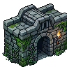
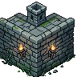
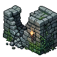
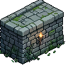

Muralha — comparação (Ctrl+F5 pra furar cache)
A) Procedural
— cobble desenhado por código (0 créditos, tinta de graça)
B) Material PixelLab v1
— granito pequeno (uniforme/grid)
B2) Material PixelLab v2
— ashlar grande (busy/repetitivo)
Peças-herói PixelLab (avulsas, não tileáveis)
portão

torre

desmoronado

bloco+tocha
